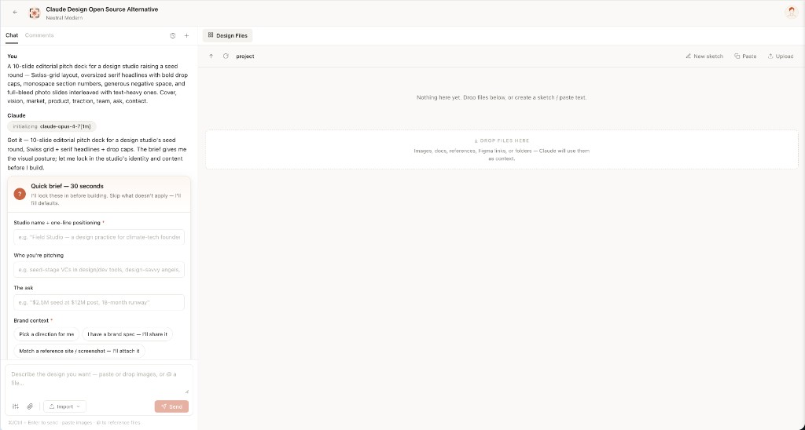
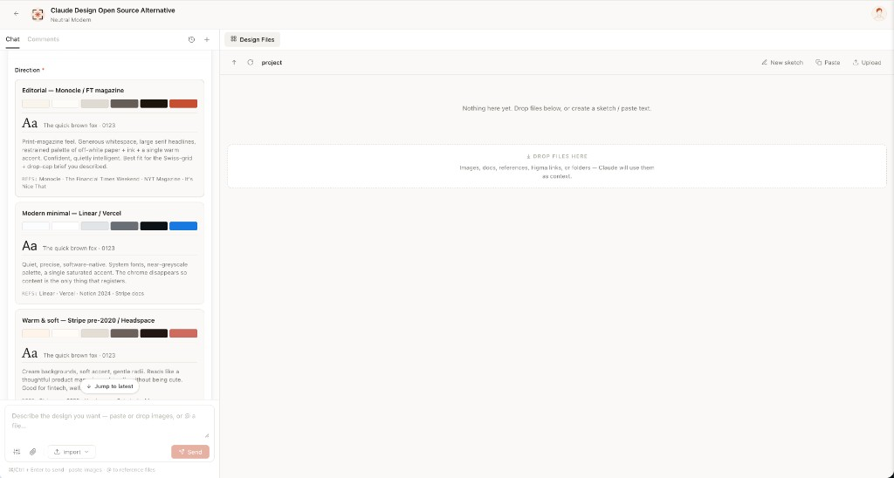
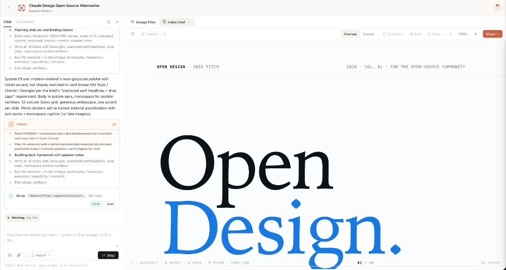
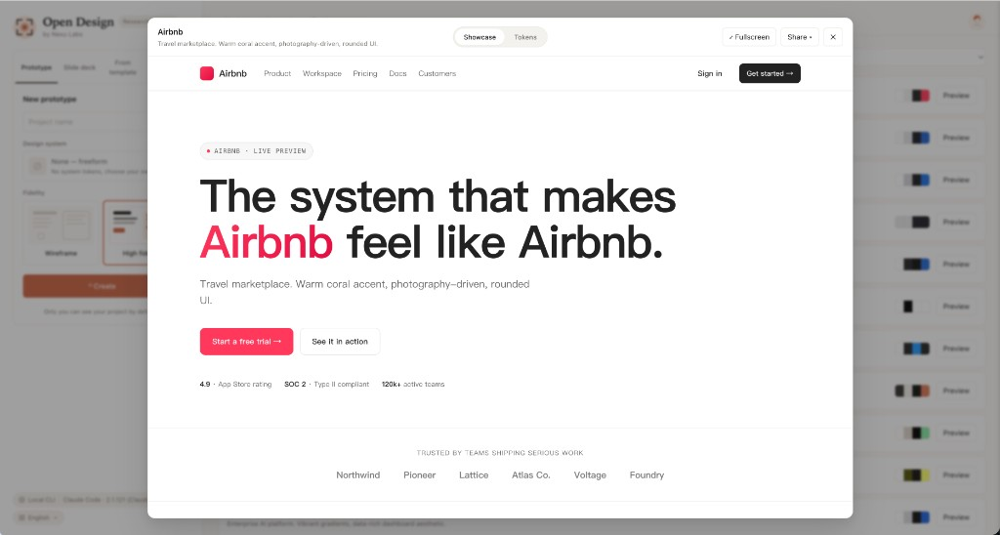
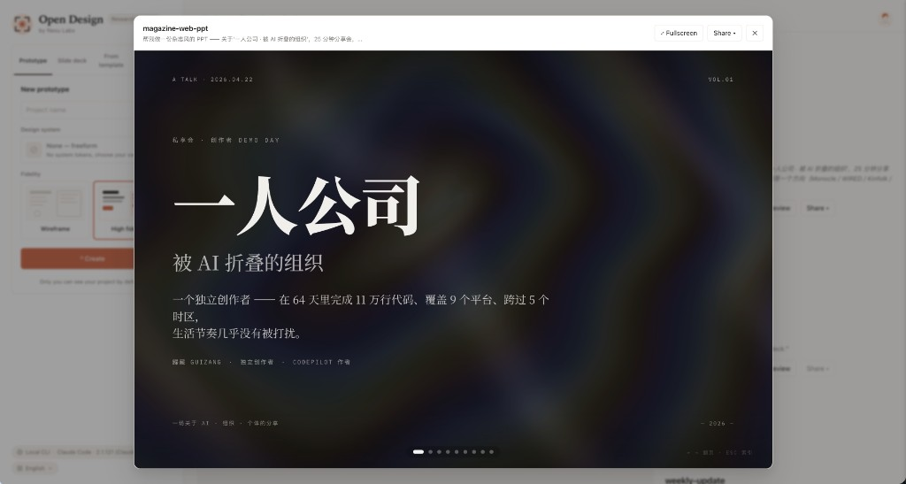

See It in Action
The complete design workflow, from brief to pixel-perfect output.

Entry View
Pick a skill, pick a design system, type the brief. The same surface for prototypes, decks, mobile apps, dashboards, and editorial pages.

Turn-1 Discovery Form
Before the model writes a pixel, OD locks the brief: surface, audience, tone, brand context, scale. 30 seconds of radios beats 30 minutes of redirects.

Direction Picker
When the user has no brand, the agent emits 5 curated directions (Monocle / Modern Minimal / Tech Utility / Brutalist / Soft Warm). One click = a deterministic palette + font stack.

Sandboxed Preview
Every artifact renders in a clean srcdoc iframe. Editable in place via the file workspace; downloadable as HTML, PDF, ZIP.

72-System Library
Every product system shows its 4-color signature. Click for the full DESIGN.md, swatch grid, and live showcase.

Deck Mode (guizang-ppt)
Magazine layouts, WebGL hero backgrounds, single-file HTML output, PDF export. The bundled guizang-ppt-skill drops in unchanged.

Mobile Prototype
Pixel-accurate iPhone 15 Pro chrome (Dynamic Island, status bar SVGs, home indicator). Multi-screen prototypes use shared /frames/ assets.